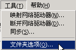

电脑操作基础
二十二、文件扩展名 返回
Windows中的文件多种多样，系统是用文件名来识别，在同一个文件夹里，不允许有重名的，也就是文件名是唯一的；
1、文件名
1）查看文件的文件名，系统一般用图标来区别不同的文件，因而扩展名是隐藏的，
打开“我的文档”，点菜单“工具－文件夹选项”，出来一个选项面板；

在面板上面选择“查看”标签，然后在中间找到“隐藏已知文件类型的扩展名”，点一下去掉前面的勾，
点“确定”按纽完成；
这时候就可以看到文件的扩展名，一般是三个字母，如几本叠放书的图标，是WinRAR压缩文档，扩展名是rar
2）常见的文件扩展名，程序文件exe，批处理文件bat，快捷方式lnk，系统文件sys，动态链链接库dll，临时文件tmp,
文档类、文字类的扩展名，文本文件txt，Word文档doc，WPS文件wps，电子表格xls，幻灯片ppt，
多媒体文件的扩展名，MP3音乐文件mp3，WMA音乐文件wma，视频文件有WMV，RM，Flash，DAT（也可能是数据文件）；
本节学习了WinXP中各种文件的扩展名，如果你成功地完成了练习，请继续学习下一课内容；
本教程由86团学校TeliuTe制作|著作权所有
基础教程网：http://teliute.org/
美丽的校园……
转载和引用本站内容，请保留版权信息和本站链接。